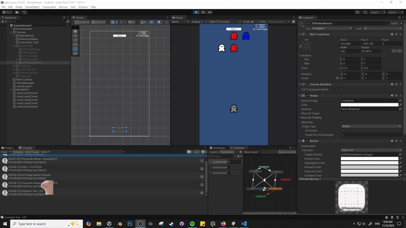
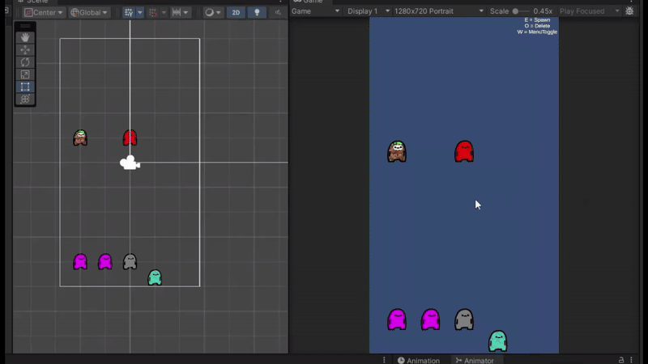

entry #3: glhf-grow-desktop-journalapp
Managed to finish the last part of the menu section! I added a delete
button to the character-details page, so users can now delete specific
characters. It wasn’t too difficult to implement since clicking on a
character already makes it easy to identify which one is selected.
I’m not entirely sure what direction to take next. I’d like to add a
picture section, but I’m unsure how I’d access the user’s photo
gallery or camera, especially alongside implementing cloud data and
account linking.
However, now that I’m thinking about it, I still want to get back into
game development, and building a basic version of this app first might
help. So I’m considering pivoting to a simple desktop
journaling app where users can add pictures. In the future, I can build an Android
version, but switching to desktop for now makes things a bit easier.
This approach also simplifies adding a photo section to the details
page and avoids immediate data-storage issues since users can manage
their own files until I come up with a better solution.

Luckily, I was able to finish a good chunk of work and actually
complete one of the features:
- The menu is now fully functional, and clicking on a character brings
up a detailed menu for that character.
- I added a feature where clicking outside the box closes the window
(the green part in the GIF is just for testing purposes)
- You can edit a text entry, and it will save individually for each
character.
Next steps:
- Implement character unlocks that can only happen once on a timer.
- Allow users to add a picture to the detailed page—this is the next
big goal.
Future task:
I’ll tackle making the system cloud-accessible once the current
features are complete.
